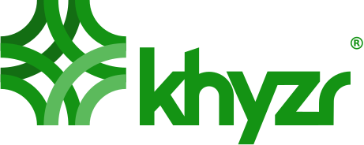
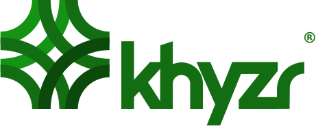
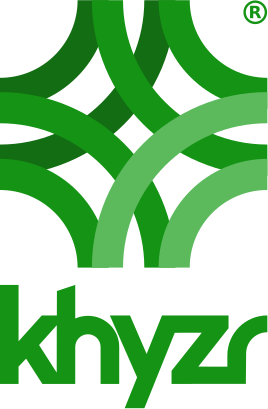
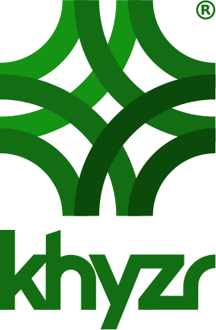
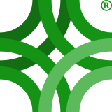
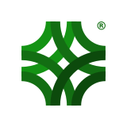
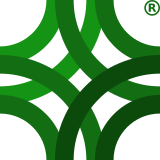
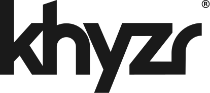

05 · Expression
Logos
The corporate marks — wordmark, symbol, lockups and badges — and the product marks for khyzr.ai and khyzr.studio. The name leads; the symbol stands alone only where the name can't fit.
The wordmark leads
The wordmark is the primary mark and the default signature everywhere.

- Use
khyzr-wordmark_on-light.svgon light surfaces andkhyzr-wordmark_on-dark.svgon dark ones. - On the site, the on-dark wordmark brands the nav and the footer.
- The glowing green dot is an accent motif, not a brand mark.
The symbol, where the name can't fit
The symbol stands alone only where the name can't fit: favicons, avatars, tight squares.
khyzr-symbol_on-light.svgon light surfaces,khyzr-symbol_on-dark.svgon dark ones.- Below 24px the symbol never appears bare; the badge carries it (see below).
Lockups
Symbol and name together, for generous room.
- With room, use the exported lockups: horizontal (
lockup-h) or vertical (lockup-v), each on light and on dark. - Never compose symbol and name by hand. New lockups are cut from the masters only, on request.
Color in the marks
The marks are not drawn in the palette's greens. They carry exactly four fills — the logo cut of the brand hue: #149314 · #136E13 · #0C4A0C · #5CBA5C. That is the original marks' value and saturation, with the hue matched to the adopted green; every UI color comes from the tokens.
- Take mark colors from the mark files and palette colors from the tokens. Never recolor either to match the other.
- No tints, no strokes, no recolored variants beyond this set.
- These rules govern the corporate mark. The product marks are their own set (see Product marks).
Monochrome is the wordmark
The symbol is never reproduced in one color — the four greens are the mark.

- Engraving, embossing, single-color print, fax: use
khyzr-wordmark_black.svgorkhyzr-wordmark_white.svg. - Black and white wordmarks only where color can't print or render.
- There is no mono symbol, and none will be cut.
Variants and grounds
- On-light files for
paperand other white surfaces; on-dark files forinkandpitch. - Marks sit on
paper, white,inkorpitch. - Never on the gradient's mid-greens. Never on photography without a solid field.
Size and clearspace
The floors are locked.
| Mark | Minimum |
|---|---|
| Symbol | 24px |
| Wordmark | 90px wide |
| Lockups | 120px wide |
- Clearspace is one blade of the symbol, on all sides.
Below 24px, the badge carries
Under the symbol's 24px floor — favicons, avatars, app tiles — the mark appears only on a plate.
- The default is the
green-900plate:khyzr-symbol_on-dark_badge.svg. - On black or near-black surroundings the plate is white:
khyzr-symbol_on-light_badge.svg(amended 2026-09-29). - Favicon. One file for every theme,
khyzr-favicon.svg: thegreen-900plate in a light browser, the white plate in a dark one. It switches byprefers-color-scheme. - Avatars. The badge fills the circle, cropped edge to edge — LinkedIn, X, Slack. Never the bare symbol.
- Share cards (og:image, 1200×630). A
green-900field,<khyzr-pattern>at seed 7 and scale .4, and the exportedlockup-hcentered. No taglines below 20px. - The badge is not a mono variant. It is the full-color mark on its plate; mono contexts still mean the wordmark.
The ® set
The mark is registered. The default files are the non-® set; the ® set lives in assets/logos/reg/.










- Use the ® set where the use is prominent, formal or legal: contracts, packaging, first prominent use.
- Footer yes, navbar no.
File naming
Every logo file follows one pattern: khyzr-[asset]_[background]_[flags]_[size].[ext].
- All lowercase; hyphens inside a field, underscores between fields; no spaces; never the ® character in a filename.
- Backgrounds are
on-lightandon-dark. The mono wordmark puts its ink in that slot instead:blackfor light grounds,whitefor dark ones. - The no-® file is the base;
_regflags the version carrying ®. - Raster sizes come last:
khyzr-symbol_on-dark_512.png. - The field order is fixed, so files sort into families.
- The SVG set in the design system is the working set. The EPS, PDF and PNG masters are kept with the logo masters.
Product marks
khyzr.ai and khyzr.studio each carry a product wordmark and a product icon. Each product has its own page with its files, colours and cuts: khyzr.ai and khyzr.studio. The corporate rules above are unchanged and govern the corporate mark.


- Icon or wordmark, never both. There are no product lockups. The icon covers favicons, avatars, app tiles and square spaces; the wordmark covers everything else.
- The wordmark is the corporate wordmark, path data unchanged, followed by
.aior.studioin Outfit 500, outlined. The x-heights match, the word is tracked −.02em, and both sit on the wordmark's own baseline. Unlike the corporate wordmark files, the product wordmarks tint the wordmark. - The icon is the corporate symbol in the product's own ramp, keeping the corporate structure: the back pair (top left), the middle four, and the front pair (bottom right, on top). Like the corporate symbol, it is never one color.
- The tiles follow the corporate badge.
green-900is the brand hue taken very dark; each product tile is that product's flagship hue at the same lightness. On black or near-black surroundings the tile turns white and the icon takes its light cut, and each product favicon is one SVG that switches between the two byprefers-color-scheme. - At the product sites' nav size the wordmark sets at 35.4px, under the corporate 90px floor.
Still open
- Floor and clearspace for the product marks: TBD — not yet decided.
- Where the product icons are distributed: TBD — not yet decided.